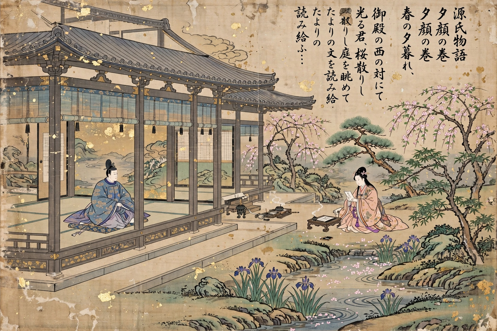

Japanese literature
From Wikipedia, the free encyclopedia

Japanese literature spans nearly fifteen centuries, from the eighth-century chronicles and poetry anthologies written in Japan's earliest literary language to the global fiction of Haruki Murakami. Its landmarks include The Tale of Genji (c. 1008), often called the world's first novel; the haiku of Matsuo Bashō; and the Nobel Prize–winning works of Yasunari Kawabata and Kenzaburō Ōe.
Classical literature
Early works include the Kojiki (712) and Nihon Shoki (720), the poetry anthology Man'yōshū (c. 759) and the Kokin Wakashū (c. 905). In the Heian court, women writers produced the era's masterpieces: Murasaki Shikibu's Tale of Genji and Sei Shōnagon's The Pillow Book. Medieval literature turned to war tales such as The Tale of the Heike, the essays of Kamo no Chōmei and Yoshida Kenkō, and Noh theatre under Zeami.
Early modern and Meiji
In the Edo period, Bashō perfected the haiku, Ihara Saigaku wrote of the merchant class, and Chikamatsu Monzaemon created puppet-theatre tragedies. After the Meiji Restoration (1868), writers absorbed Western forms: Natsume Sōseki (Kokoro), Mori Ōgai, Ryūnosuke Akutagawa and Jun'ichirō Tanizaki define the modern canon.
Modern and contemporary
Post-war literature includes Yukio Mishima, Kōbō Abe and the atomic-bomb literature of Ibuse Masuji; Kawabata (1968) and Ōe (1994) won the Nobel Prize in Literature. Contemporary Japanese fiction — Murakami, Banana Yoshimoto, Yōko Ogawa — reaches a worldwide readership, alongside the enormous popular ecosystems of Manga, light novels and cell-phone novels.